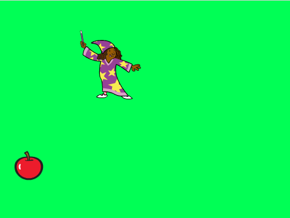
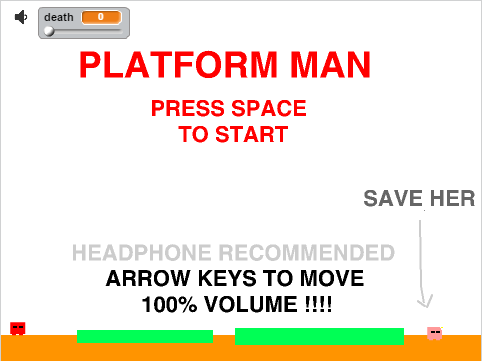

First Game
Second Game
The purpose of these games is to demonstrate the utility of scratch. To make my second game, I've created a sprite that would have accurate hit detection and another sprite that would follow the hit detection and acts as the actual character that the player can control. I've encontered some bugs and was able to fix them by fixing some values in the script. The game took 8 hours to make.